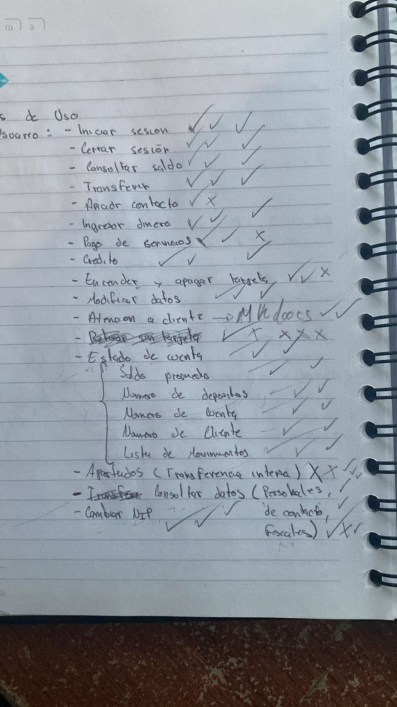
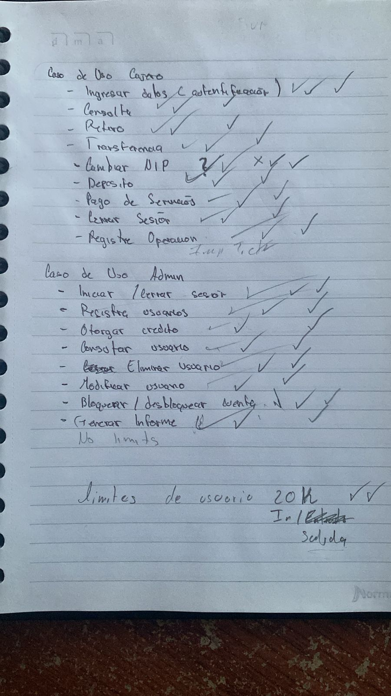
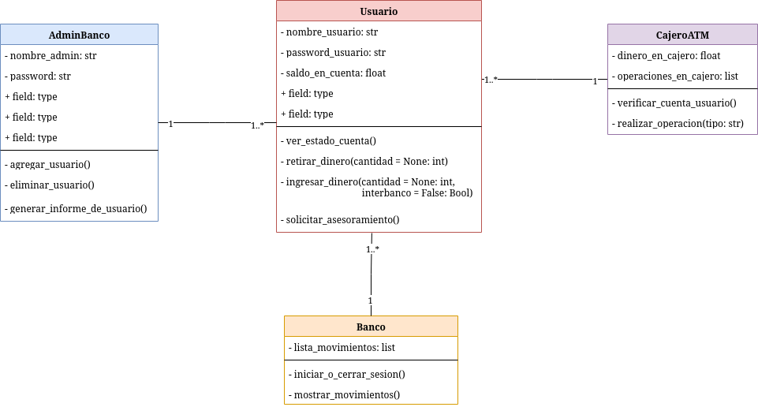
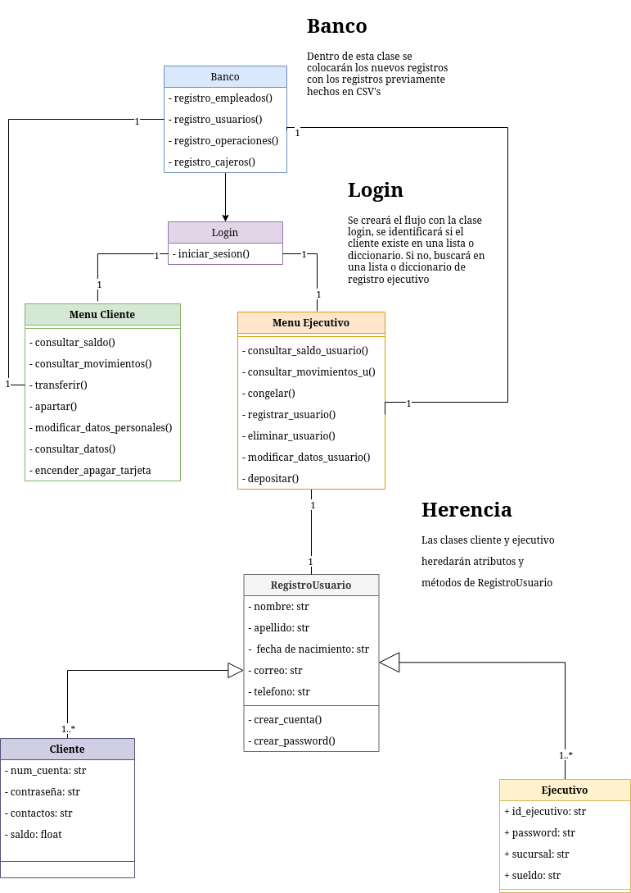
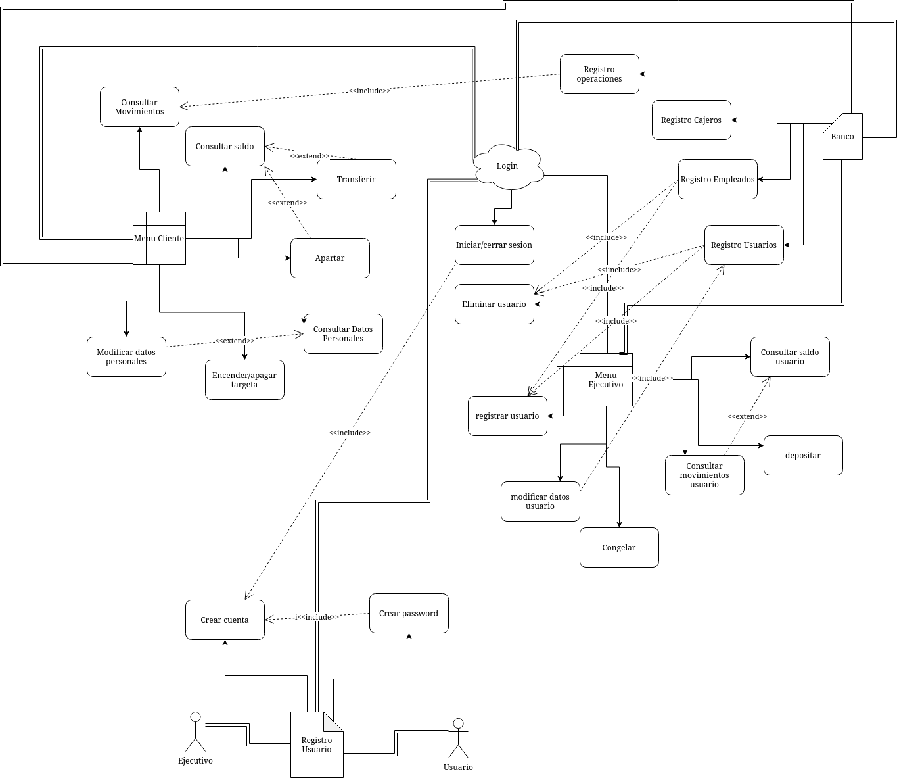
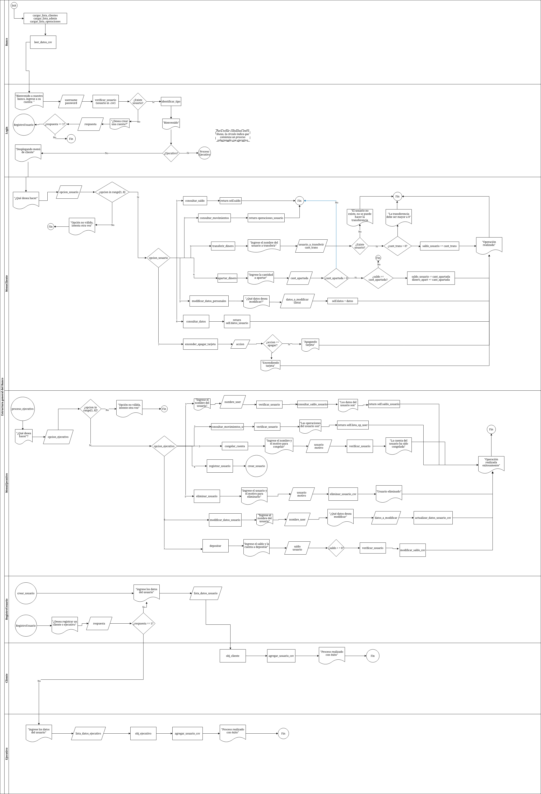

Banco Toscos Inc
Para una documentación más amplia, véase Documentación profesional del Banco
Desarrollo del proyecto
El desarrollo del proyecto constó de cuatro fases:
- La elección de los componentes funamentales de un banco.
- Inicio de la diagramación.
- Scripts de Python
- Documentación del proyecto
Componentes de un banco
En una sesión presencial en la Facultad, Héctor y Jorge presentaron sus sugerencias sobre los componentes fundamentales de un banco debido a que cuentan con más experiencias con los mismos.
 
Inicio de la diagramación
Basado en las ideas anteriores, Alexis presentó un diagrama de clases tomando los componentes fundamentales.

Posteriormente Jorge hizo un diagrama de clases mejorado, y por decisión unánime se acordó trabajar sobre ese diagrama.

Aunado a eso, Vilchis presentó un diagrama de casos de uso que, tras algunas modificaciones, terminó así

Por último, se presenta el diagrama de procesos hecho por Alexis.

Debido a que los diagramas son algo grandes, la calidad de los mismos está disminuida. Para una mejor vista de los diagramas véase: Clases HD, Casos de uso HD y Procesos HD
{kind=link}
{kind=link}
{kind=link}
Scripts en Python
Basado en los diagramas vistos anteriormente, se registraron ocho scripts de Python. El flujo del programa corre sobre el archivo principal.py (sic). Para una mayor documentación sobre cómo usar el script, véase Documentación de uso
Documentación
El documento de Latex estuvo a cargo de Arturo, experto en Latex. La instrucciones de uso del programa estuvieron a cargo del QA. El documento Mkdocs estuvo a carga de Alexis. En la presentación del proyecto colaboraron todos los integrantes del mismo.